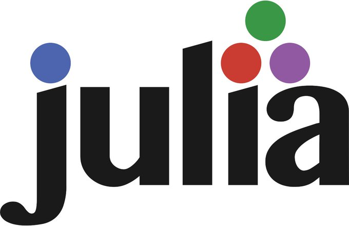
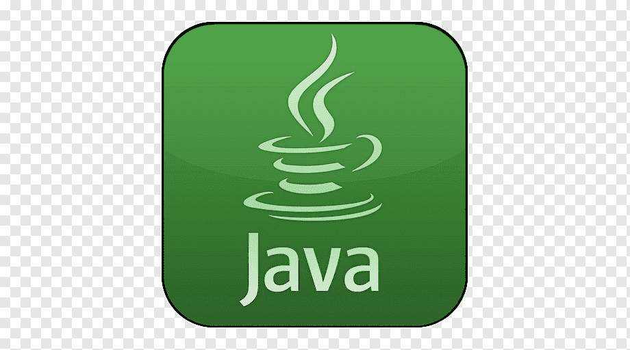
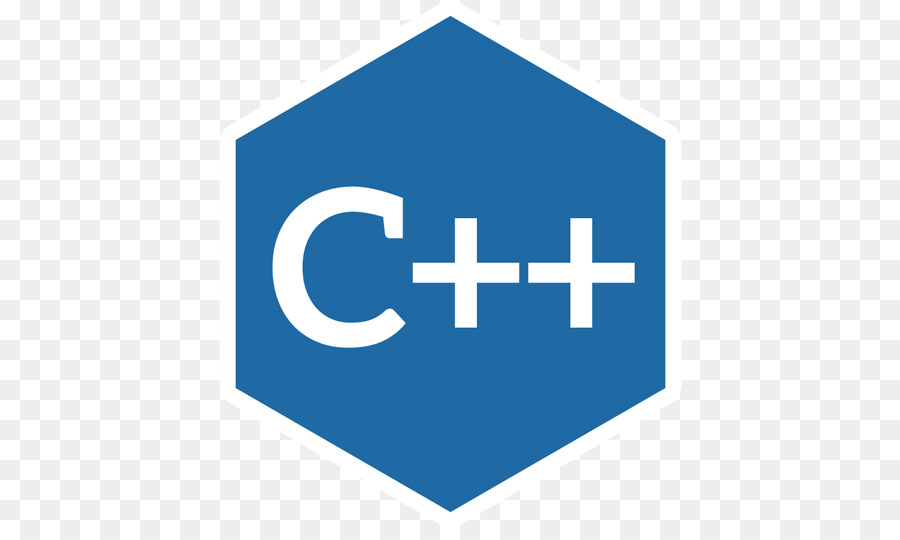
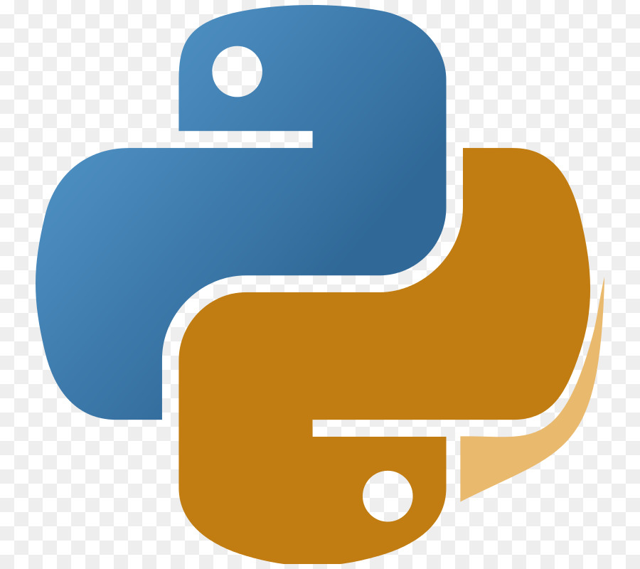
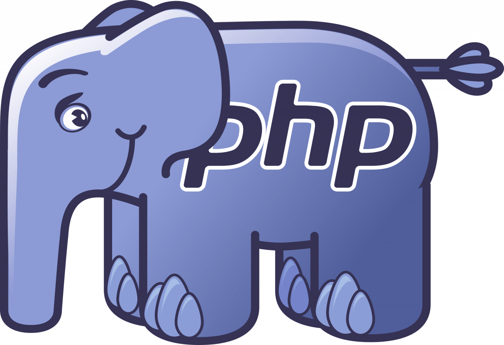
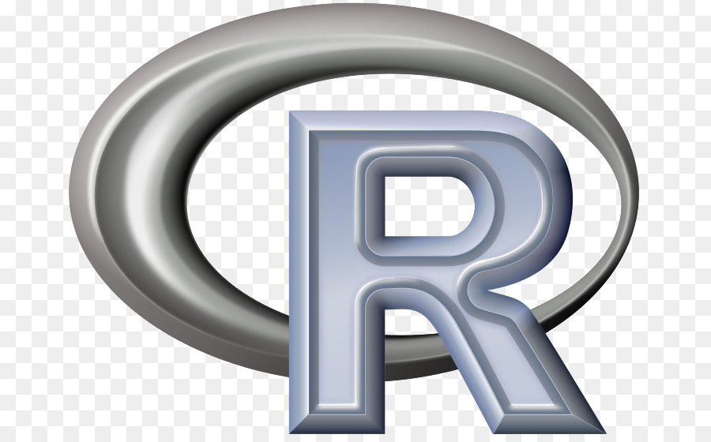
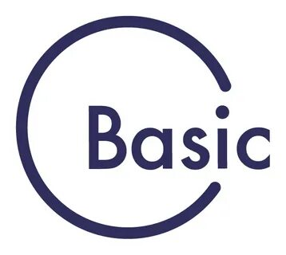
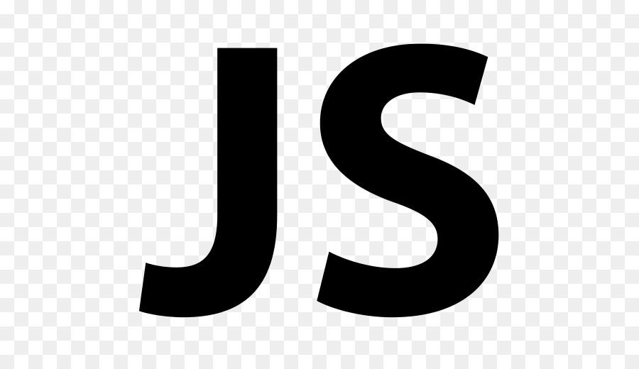
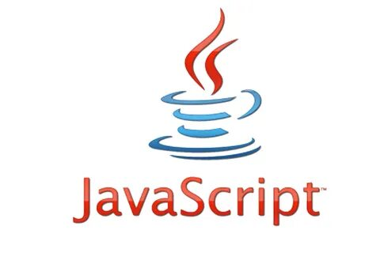

Язы́к программи́рования — формальный язык, предназначенный для записи компьютерных программ. Язык программирования определяет набор лексических, синтаксических и семантических правил, определяющих внешний вид программы и действия, которые выполнит исполнитель (обычно — ЭВМ) под её управлением.
Со времени создания первых программируемых машин человечество придумало более восьми тысяч языков программирования (включая эзотерические, визуальные и игрушечные). Каждый год их число увеличивается. Некоторыми языками умеет пользоваться только небольшое число их собственных разработчиков, другие становятся известны миллионам людей. Профессиональные программисты могут владеть несколькими языками программирования.









Как правило, язык программирования определяется не только через спецификации стандарта языка, формально определяющие его синтаксис и семантику, но и через воплощения (реализации) стандарта — программные средства, обеспечивающих трансляцию или интерпретацию программ на этом языке; такие программные средства различаются по производителю, марке и варианту (версии), времени выпуска, полноте воплощения стандарта, дополнительным возможностям; могут иметь определённые ошибки или особенности воплощения, влияющие на практику использования языка или даже на его стандарт.